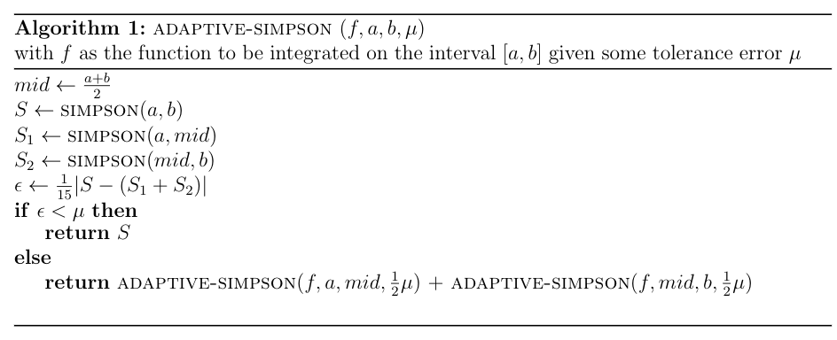

The Adaptive Quadrature is an advanced method of numerical integration technique. And for this one, we will use the basic version of the Simpson's Rule. Before describing the method of Adaptive Quadrature, a prerequisite knowledge is the basic Simpson's Rule. I have written a write-up on it here. But if you know it already it already and you just would like a refresher then keep reading. Otherwise, skip to the next section.
Here is the approximation formula for Simpson's Rule:
$$\int_a^b f(x)\,dx = \dfrac{h}{3} \Bigg[ f(a) + 4 f \Bigg( \dfrac{a+b}{2}\Bigg) + f(b)\Bigg]$$
where $h = (b-a)/2$.
To give an example, use the Simpson's Rule approximation formula for finding
$$\int_0^{\ln(2)} e^{-x}\,dx$$
Clearly $h = (b-a)/2 = (\ln(2)-0)/2 \approx 0.346574$. Thus $f(a) = f(0) = 1$ and $f(b) = f(\ln(2)) = 0.5$. For the midpoint $(a+b)/2 = (0+\ln(2))/2 = 0.346574$. Hence $f(0.346574) \approx 0.707107 \approx \sqrt{2}/2$:
$$\int_0^{\ln(2)} e^{-x}\,dx = \dfrac{\ln(2)}{6} \Bigg[ 1 + 4 \Bigg( \dfrac{\sqrt{2}}{2}\Bigg) + \dfrac{1}{2}\Bigg] = 0.500040$$
The exact value gives us $0.5$ (which you can easily check). The error is very much minimal $\approx 0.000040$. Here is a calculator to check. For logarithmic functions not in base $e$, you need to perform change of base to natural logarithmic function. Then for natural logarithmic function, use "log".
Simpson's Calculator
$\displaystyle \int\limits_I$ $\,dx = $ ???
where $I = \Bigg[$$,$$\Bigg]$
It has many names, "Adaptive Quadrature", "Adaptive Simpson's" or "Adaptive Simpson's Rule". Basically this is a recursive (meaning iteratively or repeatedly, but has subtle differences in Computing) algorithm that takes into account the error that the Simpson's Rule produces and whether or not it is "tolerable". This just means that there is some threshold $\mu$ that we will set so that if the error given off by Simpson's rule exceeds this threshold then we would have to partition the interval at hand into two separate intervals. And for each of these intervals, we apply Simpson's rule once again. The task is done recursively until Simpson's gives off a reasonable minimal error that does not overshoot the threshold. Here is an pseudocode of the algorithm I have typed up on $\LaTeX$:

Let us examine this code real quick. The inputs needed by the Adaptive-Simpson algorithm are the function $f$, the interval $[a,b]$ and the tolerance threshold error $\mu$. We first take the midpoint of the interval $[a,b]$. Then we apply Simpson's Rule on the following intervals: (1) on the entire interval $[a,b]$, (2) on the first half of the partitioned interval $[a,(a+b)/2]$ and (3) on the second half of the partitioned interval $[(a+b)/2,b]$. We then calculate the error $\epsilon$ of the Simpson's result of the interval $[a,b]$ by subtracting this result and the sum of the Simpson's result for the intervals $[a,(a+b)/2]$ and $[(a+b)/2,b]$. This is the absolute error, so we have to take its absolute value. Then divide it by 15 (this is constant). Now we check, if the error $\epsilon$ is less than the threshold error $\mu$, then we are good and we can return the result of the Simpson's on $[a,b]$. Otherwise, we partition $[a,b]$ into (1) $[a,(a+b)/2]$ and (2) $[(a+b)/2,b]$. And then we apply the Adaptive-Simpson's on (1) and on (2), and then adding the result. The caveat of doing this though is we should use half of the threshold error $\mu$ that we have used for $[a,b]$. This algorithm is done recursively as we can see that this is an algorithm that calls itself throughout its method. Does this stop? Yes, that is when the stopping condition is satisfied when the error calculated is now less than the threshold error.
Adaptive Simpson's Calculator
$\displaystyle \int\limits_I$ $\,dx = $ ???
where $I = \Bigg[$$,$$\Bigg]$ and $\mu = $ .